Deep Past and First Games 1
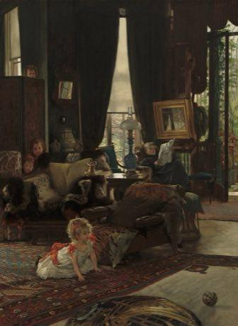
River Valleys and First Cities 1

Classical Worlds 2

Equestrian vaulting
Worldwide · Sports with animal partners
Skijoring
Worldwide · Sports with animal partners
Crossroads and Golden Ages 1
Age of Contact and Craft 3

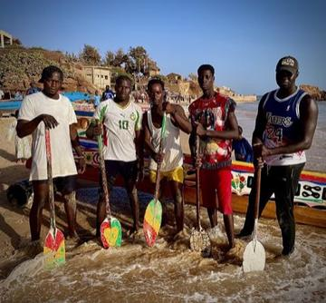
Modern Heritage 12

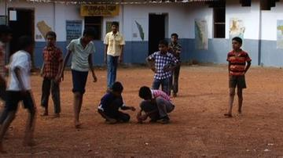

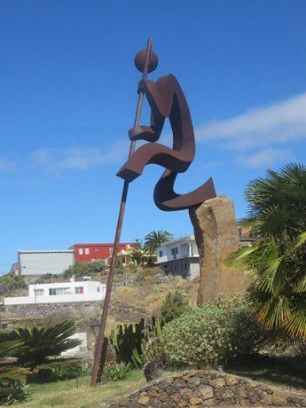
Shepherd's Leap
Worldwide · Puzzles and mind games
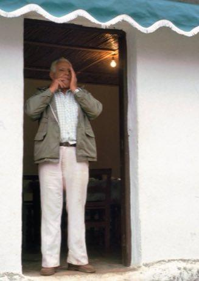
Whistled Language Relay
Worldwide · Puzzles and mind games
Living Traditions 24
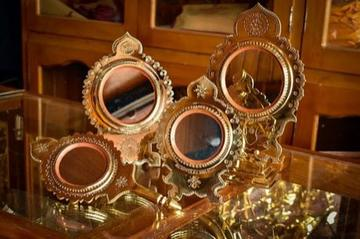
Aranmula metal mirror
Worldwide · Crafts and making
Bidriware silver inlay
Worldwide · Crafts and making
Blue-and-white porcelain painting
Worldwide · Crafts and making
Bomba
Worldwide · Dances
Botswana coil basket weaving
Worldwide · Crafts and making

Cantonese opera role maker
Worldwide · Crafts and making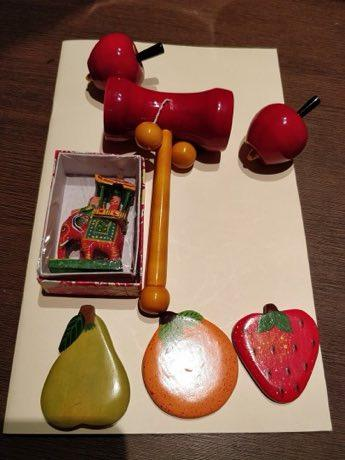
Channapatna lacquer toys
Worldwide · Crafts and making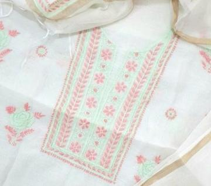
Chikankari white-on-white embroidery
Worldwide · Crafts and making
Kalamkari pen painting
Worldwide · Crafts and making
Kisii soapstone carving
Worldwide · Crafts and makingPlay preview · in the Craft Designs of the World app
Kondapalli village toys
Worldwide · Crafts and making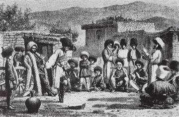

Lukasa memory board pattern game
Worldwide · Crafts and makingPlay preview · in the Paper & Paint of the World app
Lusheng
Worldwide · Musical instruments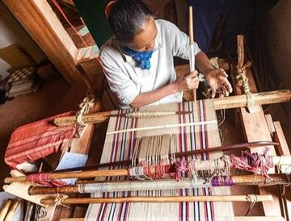
Malagasy lamba silk weaving
Worldwide · Crafts and makingPlay preview · in the Textile Crafts of the World app
Marimba
Worldwide · Musical instruments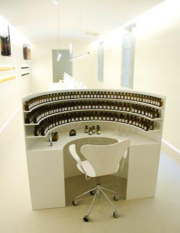
Perfumer's Organ
Worldwide · Crafts and making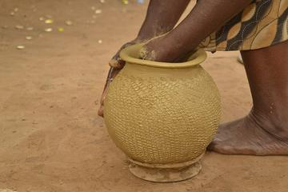
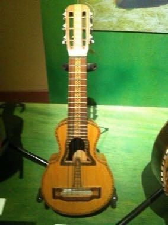
Puerto Rican Cuatro
Worldwide · Musical instruments
Sailor's Knotwork and Turk's Head
Worldwide · Crafts and making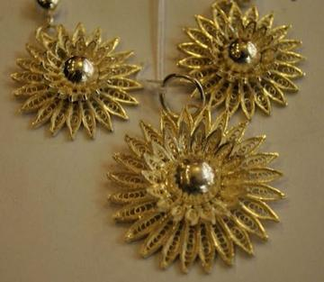
Tarakasi silver filigree
Worldwide · Crafts and making